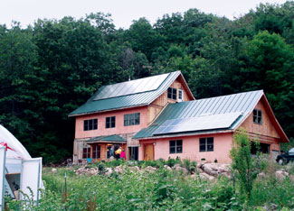
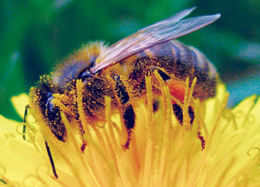
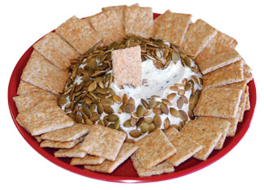

The excerpts below are from The Future is Uncertain discussion on the Mother Earth News forums. - Mother
“I refuse to think doomsday or think of myself as a survivalist, but rather try to absorb the message Mother Earth News has always taught of simplicity, growing our food, no debt and reasonable food storage. To me, that is the ideal life regardless of what is happening in the world. Regardless of the economy, I am tired of buying veggies and fruit that might be exposed to pesticides or bacteria. I am reading everything I can about building up my soil and composting. We don’t feel at all poor, as this is how we intended to live in retirement all along, the voluntary simplicity way of life. One additional thing is that I don’t feel we should turn our back on the world and its needs. We still contribute to organizations that we feel do good work. Peace, social justice and protecting the environment are still very important to us. I retired from work, not the world.”
“I’m setting up for a ‘long haul.’ We’re seeing a slow demise of petroleum; we know now as a society that one fuel source in the hands of a few is a dangerous combination.”
“Our newly purchased fixer-upper is in town and has a small lot. To save money, I’m learning to be a carpenter, plumber, landscaper, etc. I’m calling myself an urban homesteader.”
“Regardless of what happens with fuel or food, 10 years from now I want to start transitioning toward retirement. We already grow most of our vegetables, and we’ll get some poultry and maybe a few goats. I’m only partially thinking about survival, though. Instead of looking into the swirling pot of fear to see what I might not have, I look forward to what I will have. The fuel crisis will continue to unfold as it’s been doing for 35 years, but it won’t change the fact that you only get one life. I think I’ll live it more wisely with chickens.”
“We’ll grow an abundance of vegetables and put in a small orchard. We’ll be raising chickens and meat rabbits, and will look into goats and cows if the land will support them. We’ve even looked into natural/green burials for when we have to deal with the death of a loved one.”
“I imagine I would be OK if prices went up dramatically. I have always gardened (food, herbs, flowers) and can cook, make cheese and manage other self-sufficient chores. I enjoy that type of thing, so wouldn’t feel bad if it became more ‘valuable’ to society as a whole.”
“I’d start downsizing immediately. I am absolutely terrified of the future right now. I already garden and can. But that doesn’t pay the taxes and utilities. Livestock feed prices have already gone through the roof. You can only grow so much grass and then there are the droughts to contend with. Right now my health is good, but I’m going to be 59 in a few days. Will my health let me continue to do the things I am doing 10 or 20 years from now? Probably not.”
“I think an important omission in many of these types of discussion is family. Because of America’s affluence, the family has been abandoned, where it was once a lifeline. Until now, we could afford to split our families apart and scatter all our relatives across the world. Sharing tools, knowledge and equipment among an extended family will eliminate a huge amount of redundancy and associated increasing costs. Not everyone needs to have goats, chickens and plow mules if there are the types of strong bonds that can exist among family and permit greater sharing.
Everyone has to have their ‘own’ everything these days, creating huge amounts of consumerist waste. However, most won’t be able to afford that in the future. For those who have cultivated and maintained good family relations, they’ll have the benefit of being able to put several generations under one roof.”
“Three years ago my husband lost a good paying job and we lived for a year on $250 a week. We found out we did not need a lot of money to live well.”
“As for looters - I can’t say the possibility hasn’t occurred to me, but I’d much rather focus on the vision of community, vegetable gardens stretching from yard to yard to yard, collective labor, a neighborhood solar or wind power grid, shared fuel-efficient cars, shared tools and skills. We are at the edge of such huge possibilities, both positive and negative. This is the time when we demonstrate our true character.”
“When things get tight you need to be able to meet your needs - food, shelter, the basics. What you do not need is a big mortgage, credit card bills, cell phone bills, car payments, a closet full of fashionable clothing, cable or satellite TV, airfare and vacations to tourist traps. You need tools, a good healthy body to use them and the knowledge to do for yourself.”
“As for roving bands of vigilantes, I’ll turn them into farmers and teach them Buddhism, after I feed them.”
“What a frightening concept -10 times the price of everything in five years with no salary raise in sight? I think what we need to do is prevent this from happening, not prepare for it.”
God bless David Kelly and his “Fishy Toothpaste Soap” (“32 All-time Best Tips,” June/July 2008)! This morning, right as a storm was hitting us, my father-in-law and I were trying to load our 12 pigs into the trailer. Frightened, they dug into the muck and refused to move. Being the only one who could reach them, I had to try moving them, and my bare hands really paid the price!
First, I washed with homemade lye soap. The muck came off, but every line in my hand was etched brown and the smell was strong. Then I used a scrub brush and more lye soap. A little cleaner, but still really smelly. Next, CitraDish Orange dishwashing liquid; no difference. Then, straight lemon juice - wow - clean as a whistle, but still smelly. I sadly realized I would have to stink until it wore off.
The chores were done, so I picked up my new Mother Earth News, and low and behold … David Kelly saves the day! His tip to use toothpaste to wash away stubborn odors really works. Now, I’m off to surf the Web for cheesemaking cultures.
The “Ask Our Experts” answer by Oscar Will about a no-go mower was good, except he didn’t mention one cause of failure, especially in the spring: stale fuel! With today’s aromatic mixes of gasoline, the winter idle period (usually with fuel in the tank) takes its toll on spring start-ups. Adding Sta-Bil to the last fuel-up solves this problem.
Emptying the tank and allowing the engine to run until residual fuel within the carburetor is depleted is another good idea, and starting off the season by refueling with fresh fuel.
I have been a reader for about five years now and I love it! I have been getting a little irritated with the whole “go green” thing because most of the products (clothing, building and remodeling products, home decor and gardening supplies) are so expensive that the “green” label means a lot of green from your wallet.
I would like to see some info on discount green supplies from time to time, for not everything can be homegrown or homemade. For me the issue always seems to be the expense. The planet will not survive on “healthy for the wealthy.”
For starters, be sure to read Build Better Soil with Free Organic Fertilizer. Also, for organic pest control products, always choose the concentrates you mix with water - they’re much cheaper than the “ready-to-use” options. - Mother
I can’t believe your article (Build Better Soil with Free Organic Fertilizer!) didn’t mention one of the best free fertilizers: urine. It’s extraordinarily high in nitrogen, why flush it away? Turn it into fabulous free fertilizer.
Yep, we agree. Urine is a safe and effective free fertilizer. Add it to your compost, or dilute it 1 to 10 before applying it to the garden. - Mother
I was delighted to read the article All About Growing Lettuce. It’s especially encouraging that the author included information on how to save lettuce seed. There are a couple of points on this subject I would like to expand on.
Read Sylvia's lettuce seed saving tips.
Around 1976 I attended an alcohol fuel seminar presented by Mother Earth News in Norman, Okla. The target crop was Jerusalem artichokes, due to the high sugar content of its above-ground foliage, and because it’s mowable at least twice a year with minimal erosion and high output. What has happened to this theory, of which I still have the field notes? Why am I not hearing the protest from Mother Earth News about the inefficiency of corn as a base crop for ethanol as I heard in the ’70s?
Read Corn Ethanol: Hero or Hype? Also, to learn more about DIY ethanol, check out the new book, Alcohol Can Be a Gas.
I was pleased to read about food preservatives making children hyper. I first learned of these links in the 1970s and have seen this information ignored for more than 30 years since, in favor of feeding kids drugs.
You are No. 1! I get three other similar magazines and you are beating the competition, hands down. Thanks for expanding the food and gardening coverage. Barbara Pleasant is doing an outstanding job!
We enjoyed your last issue’s coverage of cheese and small dairy topics. An article in your magazine several years ago about dairy goats led us to our current profession. We have the Pholia Farm Creamery, an off-the-grid, solar-powered, sustainable, raw-milk, grade-A cheese dairy in southern Oregon. We milk only Nigerian dwarf dairy goats (which your article years ago introduced to us). We ship our cheese to several high-end specialty counters (such as Artisanal in New York City and Pastoral in Chicago). We are thrilled to be a part of the artisan cheese movement in the United States, as well as being totally self-sustaining for all of our power. Thank you for the part you have played in this!
I loved the article and recipes for making cheese! Now, we need some good recipes for crackers: to spread with fresh cheese, to enjoy with homemade jalapeño jelly and cream cheese. Fancy “natural” crackers are outrageously expensive, even at my local food co-op. I’m amazed how few recipes for crackers exist on the Internet. It can’t be rocket science. I’m sure if I can make cheese, I can make the crackers to go with it. I’m looking forward to yummy recipes to serve my family and to give as gifts to friends.
Find Editor in Chief Cheryl Long’s favorite recipe for Swedish-style rye crackers. Send your recipes to us here and we’ll add them to the page. - Mother
I had one of those “Aha!” moments today. I went outside and noted the 95 million dandelions that had sprung up. I stopped in my tracks when I saw two honeybees and a bumblebee crawling all over the yellow flowers. All of a sudden I realized that we hadn’t put down the 2,4-D weed killer yet, and boom! it hit me. This could have a huge affect on those bees and could be why they are disappearing so fast. The flowers don’t die instantly, and if the bees find them so attractive, it could be poisoning them.
Despite whatever claims the manufacturers make, has anyone done a study to see if these weed killers are harmful to bees? I’d love to know before I put that stuff on my grass! We can’t live without bees. Maybe some folks could, but I sure can’t!
Many pesticides, both herbicides and insecticides, are known to be toxic to bees, and yes, pesticide poisoning is suspected as a factor in Colony Collapse Disorder (CCD). - Mother
We are avid readers of your magazine and look forward to its arrival in our mailbox. So we were especially delighted when our 6-month-old, Isa, grabbed the newest copy and opened it up! We just had to share the photo. Keep up the good work!
|
 JOHN IVANKO From kitchen gardens to solar power, readers discuss their strategies for preparing for the future. |
 FOTOLIA Many pesticides, including both herbicides and insecticides, are known to be toxic to bees, and are a suspected factor in Colony Collapse Disorder. |
 MATTHEW T. STALLBAUMER There are lots of easy, tasty recipes for homemade cheese, as well as crackers. |
|
SUSAN & JUD RAVEN Six-month-old Isa Raven gets a head start on wiser living. |
|
|